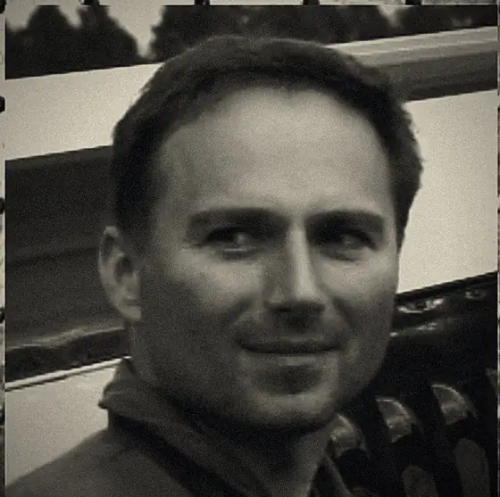

01
LEADER
PILOT FILE / 01 — AIRCRAFT: OK-KNR
Tomáš
Formation leader — number one: navigation, radio and command of the formation.
BORN1970
HEIGHT180 CM
WEIGHT77 KG
HOURS≈8 700
He first took the stick at fourteen, in a Blaník glider. Today he pays the bills as a captain and examiner with an airline, and logs around 50 hours a year in smaller aircraft. In the formation he handles the lead, navigation and radio — and his one aim is to fly so smoothly that number two, tucked in right behind him, never leaves a print on the back of his flight suit.
OK-KNR — ZLIN Z-226MS
yellow with black checks — the same pattern worn by airport “Follow me” cars